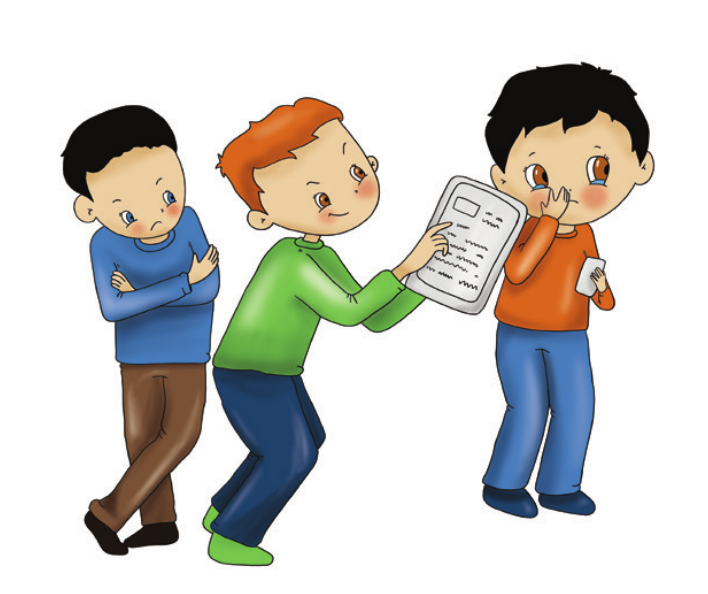
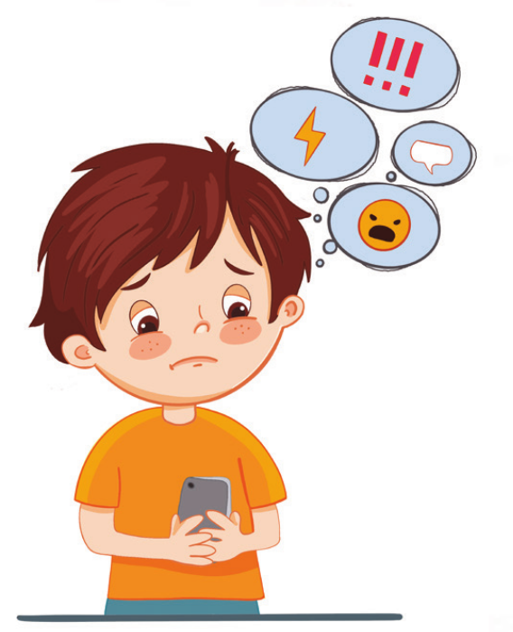

🛡️ Cyberbullying and Mindful Internet Use
Recognizing the threats in the digital world and understanding the root causes and consequences of cyberbullying is the crucial first step toward creating an empathy-based, safe digital environment.
WHAT IS CYBERBULLYING?
Today, information and communication technologies (the Internet, smartphones, computers, etc.) that facilitate rapid access to information and effortless communication have become an indispensable part of our daily lives. While these technologies offer immense opportunities, irresponsible or malicious use can cause severe adverse outcomes.

Cyberbullying; refers to the deliberate, repeated use of information and communication technologies by an individual or group to harm, intimidate, humiliate, harass, or exclude others.
Which Behaviors Constitute Cyberbullying?
- Taking photos or videos of individuals without consent and sharing them online
- Using abusive, derogatory, insulting, or offensive language on digital platforms
- Creating fake profiles or accounts in someone else's name to impersonate them
- Intimidating, threatening, or blackmailing individuals in cyberspace
- Publishing an individual's private or sensitive information without consent (doxxing)
- Creating defamatory, humiliating social media groups or hate pages targeting someone
- Organizing collective campaigns to isolate, exclude, or report-block an individual

Causes of Cyberbullying
- Misguided belief that hurtful actions are just harmless fun, jokes, or banter
- Channelling unexpressed real-life frustration, anger, or insecurity into online spaces
- The illusion of detachment and impunity provided by perceived anonymity
- The desire to gain dominance, peer status, or social clout among peers
- Erosion of empathy due to the lack of face-to-face contact and visible emotional reaction
- The misconception that digital spaces lack real supervision, rules, or consequences
- Jealousy, resentment, and retaliatory impulses
Consequences of Cyberbullying
- Cyberbullying leaves severe emotional, psychological, and social trauma.
- Victims frequently experience depression, persistent anxiety, loneliness, panic, and reduced self-worth.
- It can manifest in physical and somatic symptoms including sleep disorders, chronic migraines, and nausea.
- Students often exhibit attention deficits, steep declines in academic performance, and school avoidance.
- Tendency to withdraw from family and friendship circles, leading to severe social isolation.